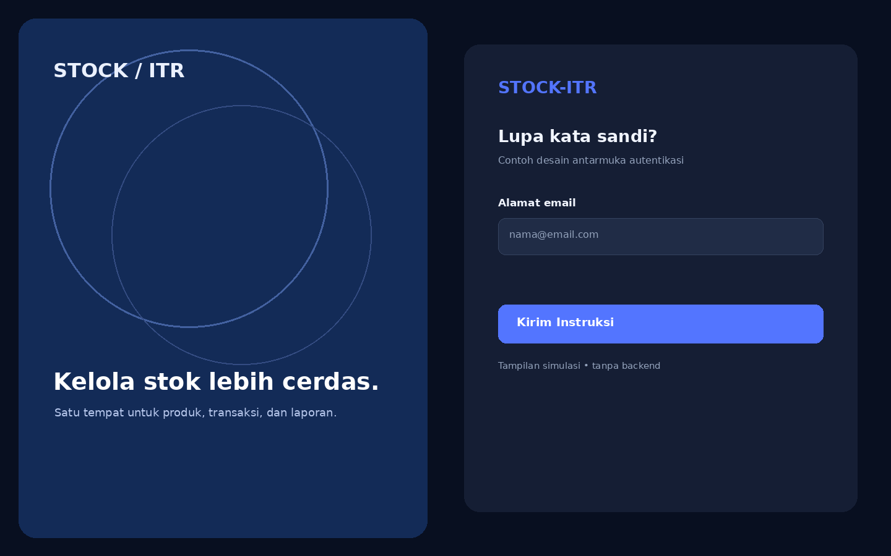
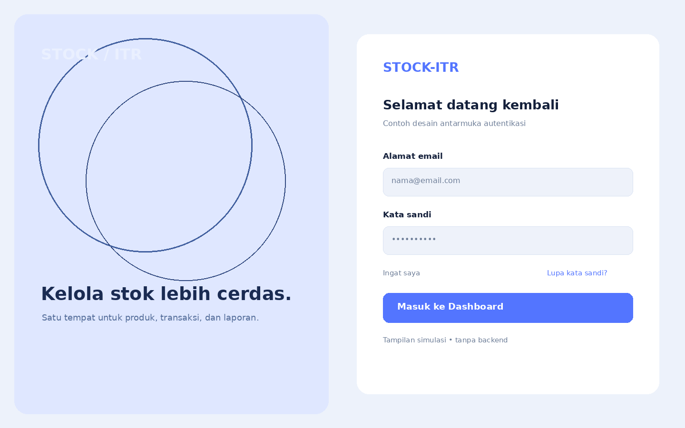
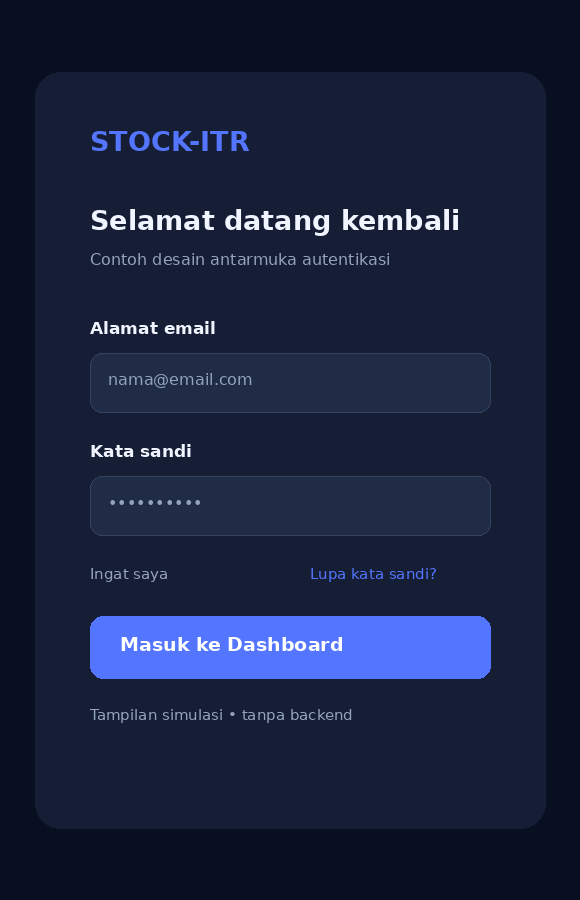

04 / Dokumentasi Visual
Galeri Project
Klik gambar untuk memperbesar. Semua gambar berikut merupakan contoh ilustrasi UI yang dapat kamu ganti dengan screenshot aplikasi asli.
Login — Dark ModeTampilan login desktop dengan panel ilustratif.
RegisterTampilan formulir pendaftaran.

Lupa Kata SandiKonsep halaman pemulihan kata sandi.

Login — Light ModeAlternatif tema terang.

Login — MobileIlustrasi layout pada layar ponsel.